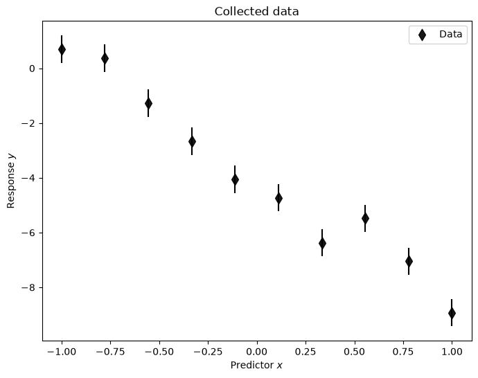
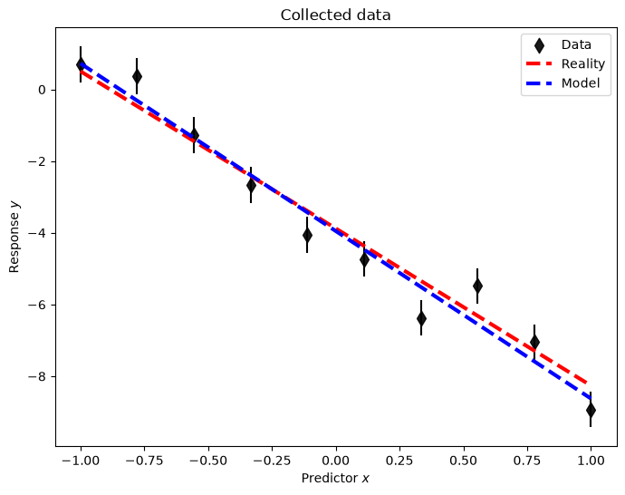

8.3. BLR-I: Background#
“La théorie des probabilités n’est que le bon sens réduit au calcul”
(trans.) Probability theory is nothing but common sense reduced to calculation.
—Pierre Simon de Laplace
Here and in the next two sections we use Bayes’ theorem to infer a (posterior) probability density function for parameters of a linear statistical model, conditional on data \(\data\). This is called Bayesian linear regression or BLR. In this context “linear” means that the parameters we seek to infer appear in the model only to the first power (specific examples below). You may already be familiar with ordinary (frequentist) linear regression, such as making a least-squares fit of a polynomial to data; later in this chapter we will show how this is related to BLR.
The advantages of doing Bayesian instead of frequentist linear regression are many. The Bayesian approach yields a probability distribution for the unknown parameters and for future model predictions. It also enables us to make all assumptions explicit whereas the frequentist approach puts nearly all emphasis on the collected data. These assumptions can be more general as well; e.g., they allow you to specify prior beliefs on the parameters (such as slope and intercept for a straight line model). Finally, we can do straightforward model checking and add a discrepancy model to account for limitations of the linear model being considered.
We will use BLR to exemplify the general Bayesian workflow we have summarized in Section 2.2 and Section 8.2. To do so, we first need to more precisely define what we mean by linear models.
Background on linear models#
Definition and examples#
In linear modeling the dependence on the model parameters \(\parsLR\) is linear, and this fact will make it possible, for certain priors, to find the distribution of model parameters analytically. Note that we will mostly operate with models depending on more than one parameter. Hence, we denote the model parameters (\(\parsLR\)) using a bold symbol. (We reserve the generic symbol \(\pars\) to include not only \(\parsLR\) but also any other parameters specifying our statistical model.) In this chapter we will, however, consider models (\(\modeloutput\)) that relate a single dependent variable (\(\output\)) with a single independent one (\(\inputt\)).
The linear parameter dependence implies that our model \(\model{\parsLR}{\inputt}\) separates into a sum of parameters times basis functions. Assuming \(N_p\) different basis functions we have
Note that there is no \(\parsLR\)-dependence in the basis functions \(f_j(\inputt)\).
From a machine-learning perspective the different basis functions are known as features.
Example 8.1 (Polynomial basis functions)
A common linear model corresponds to the use of polynomial basis functions \(f_j(x) = x^j\). A polynomial model of degree \(N_p-1\) would then be written
Note that the \(j=0\) basis function is \(f_0(x) = x^0 = 1\) such that the \(\paraLR_0\) parameter becomes the \(x=0\) intercept.
Example 8.2 (Liquid-drop model for nuclear binding energies)
The liquid drop model is useful for a phenomenological description of nuclear binding energies (BE) as a function of the mass number \(A\) and the number of protons \(Z\), neutrons \(N\):
We have five features: the intercept (constant term, bias), the \(A\) dependent volume term, the \(A^{2/3}\) surface term and the Coulomb \(Z^2 A^{-1/3}\) and pairing \((N-Z)^2 A^{-1}\) terms. Although the features are somewhat complicated functions of the independent variables \(A,N,Z\), we note that the \(p=5\) regression parameters \(\parsLR = (a_0, a_1, a_2, a_3, a_4)\) enter linearly.
Checkpoint question
Is a Fourier series expansion of a function a linear model?
Hint
If \(f(x)\) is an odd function with period \(2L\), a Fourier sine expansion of \(f(x)\) with \(N\) terms takes the form
where the \(b_n\) are to be determined.
Answer
The parameters \(b_n\) appear linearly, so this is a linear model if only the parameters are being determined (i.e. \(L\) and \(N\) are given). Note that with finite \(N\) this model will not be a perfect reproduction of a general \(f(x)\), so there will be a discrepancy.
Checkpoint question
Which of the following are linear models and which are nonlinear?
Hint
Remember that it is the parameter dependence that dictates whether it is linear.
Answer
The first and third are linear, the second is not (because of the \(b\) parameter).
Converting linear models to matrix form#
When using a linear model we have access to a set of data \(\mathcal{D}\) for the dependent variable, e.g., the \(N_d\) values
For each datum \(y_i\) there is an independent variable \(x_i\), and our model for the \(i^{\text{th}}\) datum is
We can collect the basis functions evaluated at each independent variable \(x_i\) in a matrix \(\mathbf{X}\) of dimension \(N_d \times N_p\):
This matrix will be referred to as a design matrix.
Example 8.3 (The design matrix for polynomial models)
The design matrix for a linear model with polynomial basis functions becomes
where we are considering a polynomial of degree \(p-1\), which implies a model with \(p\) features (including the intercept). It is also known in linear algebra circles as a Vandermonde matrix.
Checkpoint question
What is the design matrix for a Fourier cosine series expansion with \(N_p\) terms (plus a constant)?
Hint
If \(f(x)\) is an even function with period \(2L\), a Fourier cosine expansion of \(f(x)\) with \(N_p\) terms (plus a constant) takes the form
where the \(a_n\) are to be determined.
Answer
For convenience, let \(\omega = \pi/L\). Then the design matrix is:
Next, using the column vector \(\parsLR\) for the parameters,
we can write the general (additive) statistical model
with \(M(\parsLR) \rightarrow M(\parsLR; \inputt)\) as the matrix equation
The last term \(\residuals\) is a column vector of so-called residuals. This term includes both the data uncertainty \(\delta\data\) and the model uncertainty \(\delta M\), i.e., it expresses the part of the dependent variable, for which we have data, that we cannot describe using a linear model. Formally, we can therefore write \(\residual_i = y_i - M_i\) and define the vector \(\residuals\) as
It is important to realize that our model \(M\) provides an approximate description of the data. For now we will take \(\delta M = 0\); that is, we assume that the entire residual is explained by data uncertainty. More generally we expect that \(\delta M \neq 0\) (this is often summarized as all models are wrong) because in a realistic setting we have no guarantee that the data is generated by a linear process. Of course, based on physics insight, or other assumptions, there might exist very good reasons for using a linear model to explain the data (taking into account \(\delta\data\)).
Checkpoint question
Why does the Fourier series from the last section have to be truncated to a finite number of terms in practice?
Hint
Could I do linear algebra with \(N = \infty\)?
Answer
Our manipulations will be with finite matrices, so the basis size must be finite in practice.
The normal equation#
A regression analysis often aims at finding the parameters \(\parsLR\) of a model \(M\) such that the vector of residuals \(\residuals\) is minimized in the sense of its Euclidean norm (or 2-norm). This is assumed in the familiar least-squares analysis. Below we will see that this particular goal arises naturally in Bayesian linear regression.
Here we will lay the groundwork for an analytical solution to the linear regression problem by finding the set of parameters \(\parsLR^*\) (we will typically use an asterisk to denote specific parameters that are “optimal” in some sense) that minimizes
The solution to this optimization problem turns out to be a solution of the normal equation and is known as ordinary least-squares or ordinary linear regression. (Later an exercise will have you generalize this problem to the case where the last factor in Eq. (8.15) has a covariance matrix between the two terms.)
Theorem 8.1 (Ordinary least squares (the normal equation))
The ordinary least-squares method corresponds to finding the optimal parameter vector \(\parsLR^*\) that minimizes the Euclidean norm of the residual vector \(\residuals = \data - \dmat \parsLR\), where \(\data\) is a column vector of observations and \(\dmat\) is the design matrix (8.8).
Finding this optimum turns out to correspond to solving the normal equation
Given that the normal matrix \(\dmat^T\dmat\) is invertible, the solution to the normal equation is given by
Proof. Due to its quadratic form, the Euclidean norm \(\left| \residuals \right|_2^2 = \left(\data-\dmat\parsLR\right)^T\left(\data-\dmat\parsLR\right) \equiv C(\parsLR)\) is bounded from below and we just need to find the single extremum. That is we need to solve the problem
In practical terms it means we will require
where \(y_i\) and \(f_j(x_i)\) are the elements of \(\data\) and \(\dmat\), respectively. Performing the derivative results in
which is one element of the full gradient vector. This gradient vector can be succinctly expressed in matrix-vector form as
The minimum of \(C\), where \(\boldsymbol{\nabla}_{\parsLR} C(\parsLR) = 0\), then corresponds to
which is the normal equation. Finally, if the matrix \(\dmat^T\dmat\) is invertible then we have the solution
The pseudo-inverse (or Moore-Penrose inverse)
We note that since our design matrix is defined as \(\dmat\in {\mathbb{R}}^{N_d\times N_p}\), the combination \(\dmat^T\dmat \in {\mathbb{R}}^{N_p\times N_p}\) is a square matrix. The product \(\left(\dmat^T\dmat\right)^{-1}\dmat^T\) is called the pseudo-inverse of the design matrix \(\dmat\). The pseudo-inverse is a generalization of the usual matrix inverse. The former can be defined also for non-square matrices that are not necessarily full rank. In the case of full-rank and square matrices the pseudo-inverse is equal to the usual inverse.
Spot the error!
Your classmate simplifies \(\dmat^T\data = \dmat^T\dmat\parsLR^*\) as \(\data = \dmat\parsLR^*\) and then solves for \(\parsLR^*\) as \(\parsLR^* = \dmat^{-1}\data\). What is wrong?
Answer
\(\dmat\) is not a square matrix (in general).
The regression residuals \(\residuals^{*} = \data - \dmat \parsLR^{*}\) can be used to obtain an estimator \(s^2\) of the variance of the residuals
where \(N_p\) is the number of parameters in the model and \(N_d\) is the number of data.
In frequentist linear regression using the ordinary least-squares method we make a leap of faith and decide that we are seeking a “best” model with an optimal set of parameters \(\parsLR^*\) that minimizes the Euclidean norm of the residual vector \(\residuals\), as above.
Addendum: Ordinary linear regression in practice#
We often have situation where we have much more than just two datapoints, and they rarely fall exactly on a straight line. Let’s use python to generate some more realistic, yet artificial, data. Using the function below you can generate data from some linear process with random variables for the underlying parameters. We call this a data-generating process.
import numpy as np
import pandas as pd
import matplotlib.pyplot as plt
def data_generating_process_reality(model_type, rng=np.random.default_rng(), **kwargs):
if model_type == 'polynomial':
true_params = rng.uniform(low=-5.0, high=5, size=(kwargs['poldeg']+1,))
#polynomial model
def process(params, xdata):
ydata = np.polynomial.polynomial.polyval(xdata,params)
return ydata
# use this to define a non-polynomial (possibly non-linear) data-generating process
elif model_type == 'nonlinear':
true_params = None
def process(params, xdata):
ydata = (0.5 + np.tan(np.pi*xdata))**2
return ydata
else:
print(f'Unknown Model')
# return function for the true process the values for the true parameters
# and the name of the model_type
return process, true_params, model_type
Next, we make some measurements of this process, and that typically entails some measurement errors. We will here assume that independently and identically distributed (i.i.d.) measurement errors \(e_i\) that all follow a normal distribution with zero mean and variance \(\sigma_e^2\). In a statistical notation we write \(e_i \sim \mathcal{N}(0,\sigma_e^2)\). By default, we set \(\sigma_e = 0.5\).
def data_generating_process_measurement(process, params, xdata,
sigma_error=0.5, rng=np.random.default_rng()):
ydata = process(params, xdata)
# sigma_error: measurement error.
error = rng.normal(0,sigma_error,len(xdata)).reshape(-1,1)
return ydata+error, sigma_error*np.ones(len(xdata)).reshape(-1,)
Let us setup the data-generating process, in this case a linear process of polynomial degree 1, and decide how many measurements we make (\(N_d=10\)). All relevant output is stored in pandas dataframes.
#the number of data points to collect
# -----
Nd = 10
# -----
# predictor values
xmin = -1 ; xmax = +1
Xmeasurement = np.linspace(xmin,xmax,Nd).reshape(-1,1)
# store it in a pandas dataframe
pd_Xmeasurement = pd.DataFrame(Xmeasurement, columns=['x'])
# Define the data-generating process.
# Begin with a polynomial (poldeg=1) model_type
# in a second run of this notebook you can play with other linear models
reality, true_params, model_type = data_generating_process_reality(model_type='polynomial',poldeg=1)
print(f'model type : {model_type}')
print(f'true parameters : {true_params}')
print(f'Nd = {Nd}')
# Collect measured data
# -----
sigma_e = 0.5
# -----
Ydata, Yerror = data_generating_process_measurement(reality,true_params,Xmeasurement,sigma_error=sigma_e)
# store the data in a pandas dataframe
pd_D=pd.DataFrame(Ydata,columns=['data'])
#
pd_D['x'] = Xmeasurement
pd_D['e'] = Yerror
# We will also produce a denser grid for predictions with our model and comparison with the true process. This is useful for plotting
xreality = np.linspace(xmin,xmax,200).reshape(-1,1)
pd_R = pd.DataFrame(reality(true_params,xreality), columns=['data'])
pd_R['x'] = xreality
model type : polynomial
true parameters : [-3.87756554 -4.38361087]
Nd = 10
Create some analysis tool to inspect the data, and later on the model.
# helper function to plot data, reality, and model (pd_M)
def plot_data(pd_D, pd_R, pd_M, with_errorbars = True):
fig, ax = plt.subplots(1,1,figsize=(8,6))
ax.scatter(pd_D['x'],pd_D['data'],label=r'Data',color='black',zorder=1, alpha=0.9,s=70,marker="d");
if with_errorbars:
ax.errorbar(pd_D['x'],pd_D['data'], pd_D['e'],fmt='o', ms=0, color='black');
if pd_R is not None:
ax.plot(pd_R['x'], pd_R['data'],color='red', linestyle='--',lw=3,label='Reality',zorder=10)
if pd_M is not None:
ax.plot(pd_M['x'], pd_M['data'],color='blue', linestyle='--',lw=3,label='Model',zorder=11)
ax.legend();
ax.set_title('Collected data');
ax.set_xlabel(r'Predictor $x$');
ax.set_ylabel(r'Response $y$');
return fig,ax
Let’s have a look at the data. We set the last two arguments to None for visualizing only the data.
plot_data(pd_D, None, None);

Linear regression proceeds via the design matrix. We will analyze this data using a linear polynomial model of order 1. The following code will allow you to setup the corresponding design matrix \(\dmat\) for any polynomial order (referred to as poldeg below)
def setup_polynomial_design_matrix(data_frame, poldeg, drop_constant=False, verbose=True):
if verbose:
print('setting up design matrix:')
print(' len(data):', len(data_frame.index))
# for polynomial models: x^0, x^1, x^2, ..., x^p
# use numpy increasing vandermonde matrix
print(' model poldeg:',poldeg)
predictors = np.vander(data_frame['x'].to_numpy(), poldeg+1, increasing = True)
if drop_constant:
predictors = np.delete(predictors, 0, 1)
if verbose:
print(' dropping constant term')
pd_design_matrix = pd.DataFrame(predictors)
return pd_design_matrix
So, let’s setup the design matrix for a model with polynomial basis functions. Note that there are \(N_p\) parameters in a polynomial function of order \(N_p-1\)
Np=2
pd_X = setup_polynomial_design_matrix(pd_Xmeasurement,poldeg=Np-1)
setting up design matrix:
len(data): 10
model poldeg: 1
We can now perform linear regression, or ordinary least squares (OLS), as
#ols estimator for physical parameter theta
D = pd_D['data'].to_numpy()
X = pd_X.to_numpy()
ols_cov = np.linalg.inv(np.matmul(X.T,X))
ols_xTd = np.matmul(X.T,D)
ols_theta = np.matmul(ols_cov,ols_xTd)
print(f'Ndata = {Nd}')
print(f'theta_ols \t{ols_theta}')
print(f'theta_true \t{true_params}\n')
Ndata = 10
theta_ols [-3.94961222 -4.67318178]
theta_true [-3.87756554 -4.38361087]
To evaluate the (fitted) model we setup a design matrix that spans dense values across the relevant range of predictors.
pd_Xreality = setup_polynomial_design_matrix(pd_R,poldeg=Np-1)
setting up design matrix:
len(data): 200
model poldeg: 1
and then we dot this with the fitted (ols) parameter values
Xreality = pd_Xreality.to_numpy()
pd_M_ols = pd.DataFrame(np.matmul(Xreality,ols_theta),columns=['data'])
pd_M_ols['x'] = xreality
A plot (which now includes the data-generating process ‘reality’) demonstrates the quality of the inference.
plot_data(pd_D, pd_R, pd_M_ols);

To conclude, we also compute the sample variance \(s^2\)
ols_D = np.matmul(X,ols_theta)
ols_eps = (ols_D - D)
ols_s2 = (np.dot(ols_eps,ols_eps.T)/(Nd-Np))
print(f's^2 \t{ols_s2:.3f}')
print(f'sigma_e^2 \t{sigma_e**2:.3f}')
s^2 0.409
sigma_e^2 0.250
As seen, the extracted variance is in some agreement with the true one.
Using the code above, you should now try to do the following exercises.
Exercise 8.1
Keep working with the simple polynomial model \(M = \paraLR_0 + \paraLR_1 x\)
Reduce the number of data to 2, i.e., set Nd=2. Do you reproduce the result from the simple example in the previous section?
Increase the number of data to 1000. Do the OLS values of the model parameters and the sample variance approach the (true) parameters of the data-generating process? Is this to be expected?
Exercise 8.2
Set the data-generating process to be a 3rd-order polynomial and set limits of the the predictor variable to [-3,3]. Analyze the data using a 2nd-order polynomial model.
Explore the limit of \(N_d \rightarrow \infty\) by setting \(N_d = 500\) or so. Will the OLS values of the model parameters and the sample variance approach the (true) values for some of the parameters?